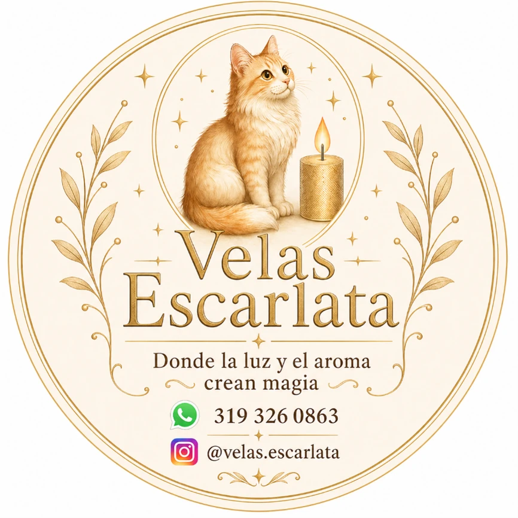
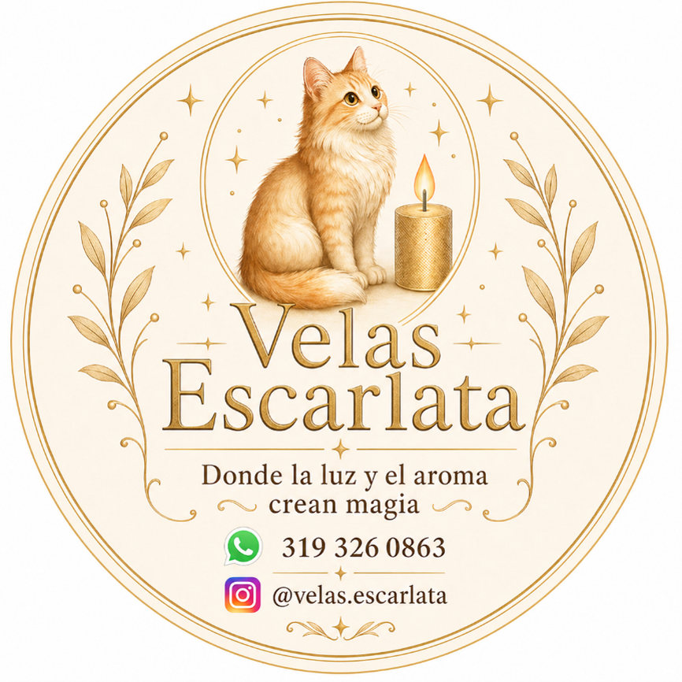
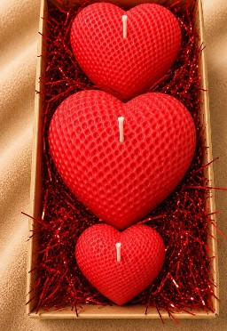
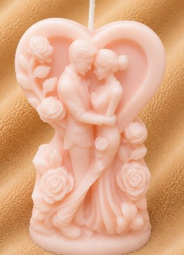
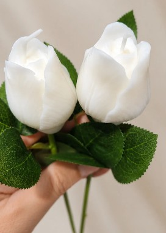
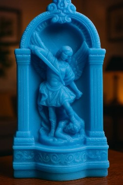
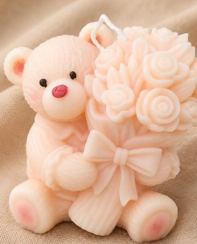
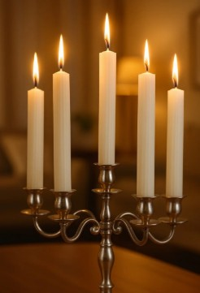

Luz con intención
Atmósferas cálidas que hacen sentir cada espacio más íntimo y personal.

Luz · Aroma · Magia
Donde la luz y el aroma crean magia.
Velas artesanales de alta gama
Piezas creadas a mano para transformar cada espacio con luz, aroma y una magia profundamente personal.

Nuestra esencia
Velas Escarlata nace del deseo de convertir la luz, el aroma y la forma en experiencias capaces de transformar un espacio.
Cada pieza se concibe como un objeto artesanal. La composición, el color y los acabados se cuidan para crear velas decorativas con carácter, pensadas para regalar, acompañar un ritual o conservar un recuerdo.
“Donde la luz y el aroma crean magia.”
Atmósferas cálidas que hacen sentir cada espacio más íntimo y personal.
Formas, colores y acabados trabajados con atención al detalle.
Piezas que convierten momentos sencillos en recuerdos especiales.
El proceso artesanal
Nuestras velas se elaboran a mano utilizando ceras de alta calidad, esencias aromáticas y pigmentos especiales. Cada decisión de diseño busca unir color, aroma y forma en una pieza elegante y duradera.
Ceras de alta calidad, esencias aromáticas y pigmentos especiales forman la base de cada pieza.
Creamos figuras decorativas y velas en vaso, definiendo con cuidado la forma, el color y el aroma.
La mezcla se vierte cuidadosamente en moldes o recipientes para respetar cada detalle del diseño.
Cada vela reposa hasta alcanzar un acabado firme, elegante y duradero.
Colección Escarlata
Una primera mirada a nuestras velas artesanales, creadas para celebrar vínculos, símbolos y momentos inolvidables.

01Amor
Pieza decorativa artesanal

02Celebraciones
Pieza decorativa artesanal

03Naturaleza
Pieza decorativa artesanal

04Devoción
Pieza decorativa artesanal

05Detalles
Pieza decorativa artesanal

06Esenciales
Pieza decorativa artesanal
No encontramos productos con esa búsqueda.
Uso responsable
Nuestras velas son elaboradas artesanalmente, por lo que cada pieza puede presentar pequeñas variaciones de color, textura, aroma y acabado. Estas diferencias hacen parte de su proceso de fabricación y convierten cada vela en una pieza única.
La función principal de nuestras velas de figuras es decorativa. Sin embargo, también pueden encenderse teniendo en cuenta algunas consideraciones especiales.
Debido a su forma, tamaño y diseño, estas velas pueden derretirse de manera irregular, producir derrames de cera o consumir algunas zonas más rápido que otras. Por esta razón:
Preguntas frecuentes
Conoce los aspectos esenciales de nuestras velas y las formas disponibles para consultar tu próxima pieza.
Creamos velas decorativas con diferentes figuras y también velas en vaso, cuidando el diseño, el color y el aroma de cada pieza.
Utilizamos ceras de alta calidad, esencias aromáticas y pigmentos especiales para obtener un acabado firme, elegante y duradero.
Sí. Puedes escribirnos por WhatsApp para consultar la disponibilidad, los colores y las opciones de personalización.
Comunícate directamente con Velas Escarlata por WhatsApp al 319 326 0863. Allí podrás consultar la colección y recibir atención personalizada.
Contacto directo
Consulta disponibilidad, colores y opciones de personalización directamente con Velas Escarlata.